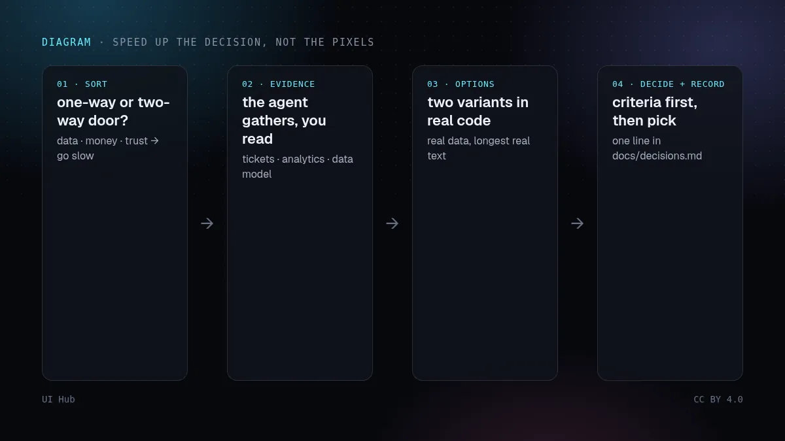
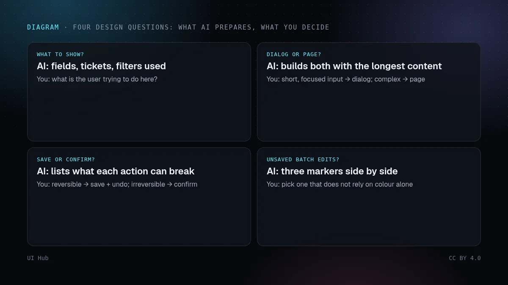

11 月 26 日，Tailwind CSS 的作者 Adam Wathan 发帖说，他至今没找到让 AI 真正加快设计工作的办法，在每个决策上花的时间和 2021 年一样多。到 11 月 28 日，这条帖子已有约 2000 个赞、360 条回复和超过 22.9 万次浏览，说明有同感的人很多。第二天他列出了自己指的是哪类决策：这里显示哪些信息才有用；这该做成弹窗还是单独页面；按钮是立即保存，还是先弹出确认；批量编辑时，怎么标出改过但还没保存的内容。
回复大致分成两派，而且分得很有意义。专注界面手艺、也教这门课的 Emil Kowalski 说，AI 最适合在细节上打辅助，比如阴影、动效参数和字体排印；把更大的决策交给智能体既难，也不如留给人来做健康。Wathan 表示同意，还补了一句扎心的话：因为其他事情都变得飞快，花时间想设计反而开始让人觉得“不该花”。另一边，Alex Barashkov 认为挫败感通常来自设计师使用 AI 的方式：一次只开一个线程、要么完美要么失败的预期、没有智能体能读懂的设计系统、问题切得太小，以及没有安排让智能体在你睡觉时干活、第二天早上你再审。
再看一遍那四个例子，没有一个关乎界面长什么样。每一个都是关于人、数据和风险的判断：用户此刻想干什么，屏幕上需要多少上下文，出错会怎样。模型回答“做一个设置弹窗”很快，但它没法知道你的用户是一周改一条记录，还是一天改两百条。于是生成这一步快了很多，决策这一步却没变，这正是 Wathan 说的情况。
我们的看法是：讨论的两边都对，解决办法是别再给错的环节计时。一个设计决策里有三段慢的部分，它们都不是“拍板”本身，而 AI 恰好三段都擅长：

另一个提速办法，是在不值得花时间的决策上少花时间。Jeff Bezos 在致股东信里讲得很清楚：大多数决策是“双向门”，可以撤回，应该在掌握大约 70% 你想要的信息时就快速做出；少数是“单向门”，值得慢慢、仔细地斟酌。错误在于让每个决策都走重流程。Lovable 在 11 月 19 日把同样的思路做进了它的智能体：它向你提问时，会继续搭建不依赖答案的部分，其余部分先选一个选项，你选了别的再返工；但在难以撤回的步骤之前，比如删除数据，它会等你回答。
在界面工作里，一旦 UI 是代码，大多数选择都是双向门：弹窗还是页面、字段顺序、表格显示哪几列、空状态的文案。选一个合理的默认值，上线，观察，再改。单向门是那些会伤到用户或其数据的地方：破坏性操作、涉及钱或权限的一切、发给用户的邮件和通知、数据迁移，以及公开的 URL。把慢下来的、属于人的思考花在这里。
Barashkov 的时间安排建议是这场讨论里最实用的一条。每天最后半小时，把悬而未决的设计问题变成智能体任务：收集证据、做出两个版本、列出边界情况。第二天早上一次性审完结果，然后拍板。思考的时间不会消失，但它不再被浪费在准备工作和争论没人见过的方案上。同时记住 Kowalski 的提醒：目标不是把品味外包出去，而是给你的品味更好的材料。

# 贴给编程智能体，把设计问题填进去
设计问题：[例如：编辑客户地址，用弹窗还是单独页面？]
不要替我做决定，帮我把决策准备好：
1. 证据：总结数据模型、客服工单、埋点事件和我们的设计系统文档
对这个流程怎么说。标注来源，最多 10 条。
2. 分级：它可以撤回（双向门）吗？列出每个选项
可能给用户或其数据带来的问题。
3. 选项：在真实应用里用功能开关做出两个能用的版本，
用我们的组件、真实数据和最长的真实文字。不要设计稿。
4. 标准：在展示版本之前，根据证据提出 3–5 条评判标准。
5. 记录：为 docs/decisions.md 起草一条决策记录，留空
“选择”一栏，附一行理由。选择由我来填。UI Hub 相关阅读：让并行的设计方向可以比较、给智能体的品味与技能、智能体的审批界面，以及把设计智能体的规则写进代码。